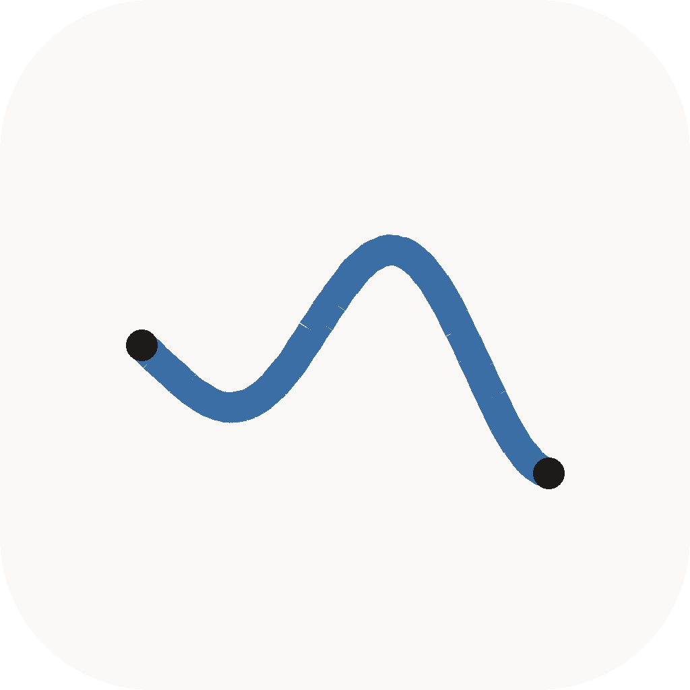

Sketchback
An idea notebook where the atom isn't a paragraph — it's a block, and a block can be ink, a photo, a voice memo, or a file.
Obsidian-shaped, but a note is a stack of blocks rather than a markdown file. Project boards are a view over the link graph, not a separate thing. It's a local-first desktop app for one person, written in Tauri and React, with sync to a home server as an option rather than a requirement.
The point
-
Ink inside a note.
An infinite-canvas sketch layer as just another block — zoom forever, tiny files, feels right with a pen.
-
Media that doesn't fall over.
Drop 400 phone photos into an idea and the app keeps up. Content-addressed storage, thumbnails, no memory blow-up.
-
Boards that are your ideas.
A kanban whose cards are the ideas. Drag a card and the idea moves with it.
One rule keeps all three cheap: everything is a blob or a block. Blocks are addressable, and links are rows. A sketch is a block. A photo is a block plus blobs. Nothing gets a bespoke way of being saved.
Where it is right now
This is an early build — week 2 of a 12-week plan. It is being written in the open, and the plan itself is in the repository. Here is the honest split.
Working today
- Ideas: create, rename, delete, reopen — they survive a restart
- Text blocks: one editor per block, markdown shortcuts going in and markdown coming out
- A command palette on
Ctrl+Kwith every markdown element - A slash menu — type
/to insert - Day, night and system themes, plus a custom accent colour
- Export an idea as a folder of linked
.mdfiles, ready for Obsidian
Not built yet — in plan order
- Sketching and the ink canvas
- Photos, voice memos and file attachments
- Boards
- Links, backlinks and search
- Undo history and sync
Screenshots
Nothing here yet. Screenshots appear as the surfaces land.


Ctrl+K.
.md files.